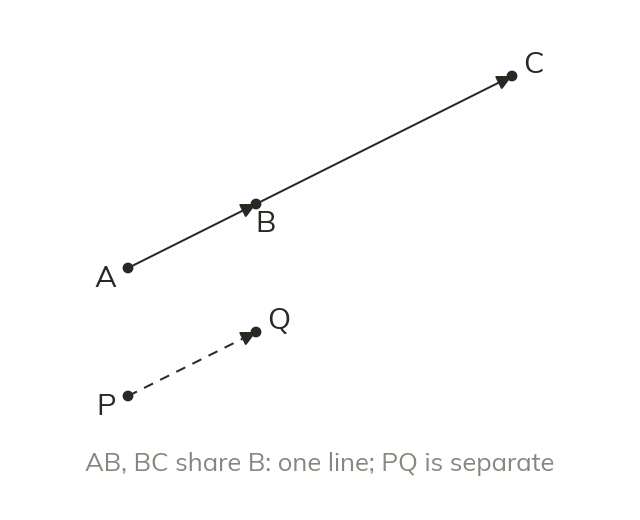
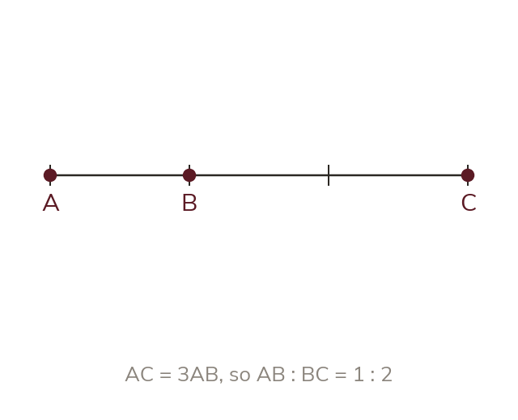
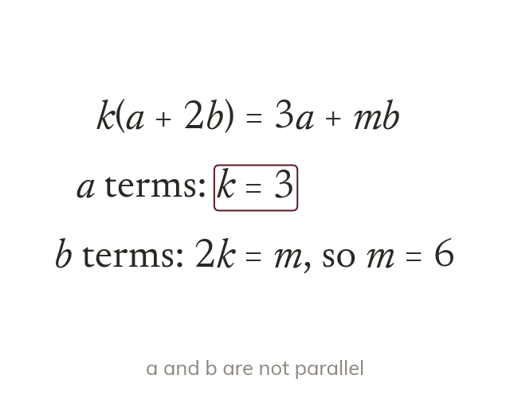
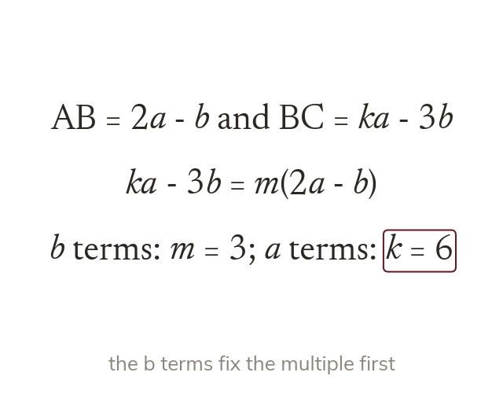

Parallel and sharing a point
Points on one line give parallel vectors that share a point. Parallel alone could mean two separate lines.
Three points lie on one straight line exactly when their vectors say so. Today we prove points are collinear, and find unknowns that make them so.
Work down the page at your own pace. Write every answer in your book first, then click to check it.
Read each card, then follow the worked examples one step at a time.

Points on one line give parallel vectors that share a point. Parallel alone could mean two separate lines.

If AC→ = 3AB→, then AC is three parts and AB is one. So AB : BC = 1 : 2.
Pick an answer. If it's wrong, the feedback tells you which mistake it was.
Read each card, then follow the worked examples one step at a time.

a and b are not parallel, so a vector equation in them splits in two. The a terms match, and the b terms match.

Collinear points need one vector to be a multiple of the other. The multiple gets a letter, and the coefficients are compared.
Pick an answer. If it's wrong, the feedback tells you which mistake it was.
Finished? Next lesson: 11H.9.1 Using Function Notation.
Log in, then search for a code to practise that skill.
Videos, worksheets and more on each part of this lesson.